farm-before

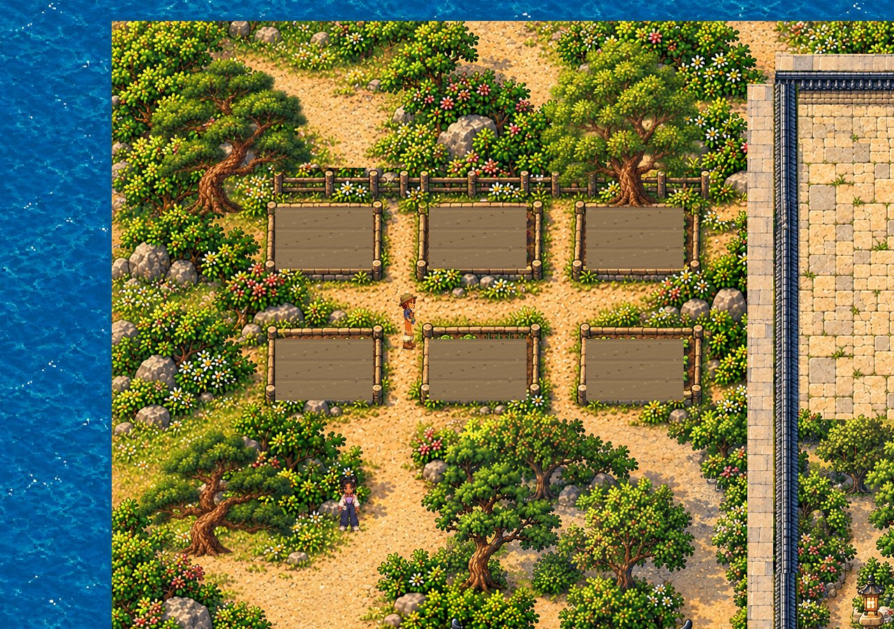
Candidate để nghiệm thu. 6 luống/36 ô độc lập; 26 NPC,12 nhân vật,24 cosmetics giữ nguyên. Chưa có phê duyệt mỹ thuật cuối.
Chơi candidate · Kiểm tra Tây Hanok · Bằng chứng trạng thái · QA/WARN/NOT TESTED

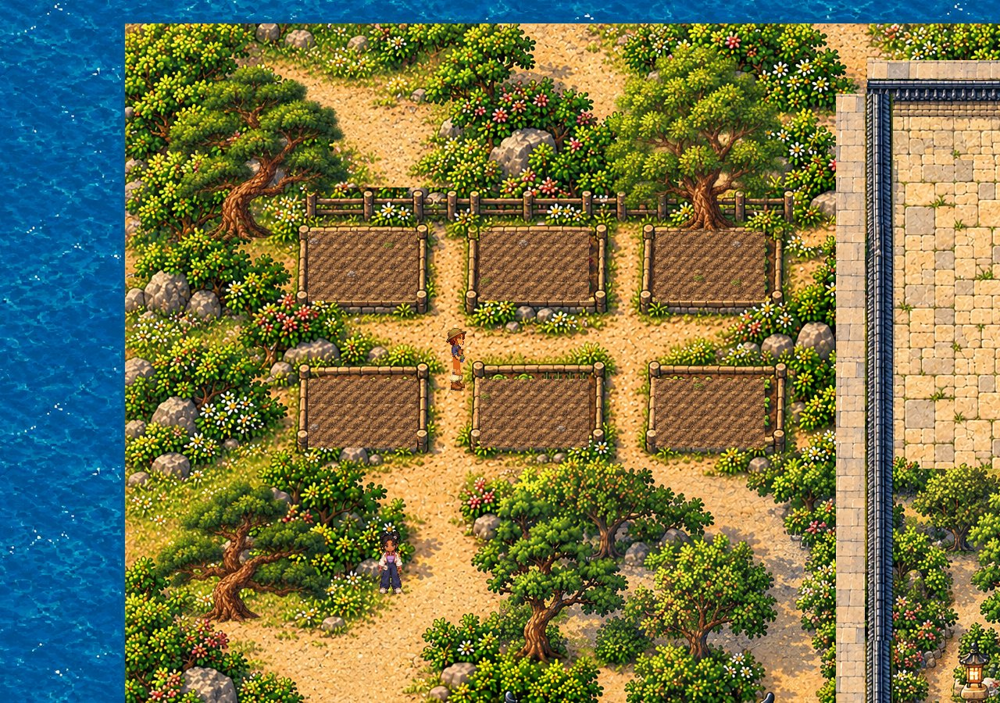
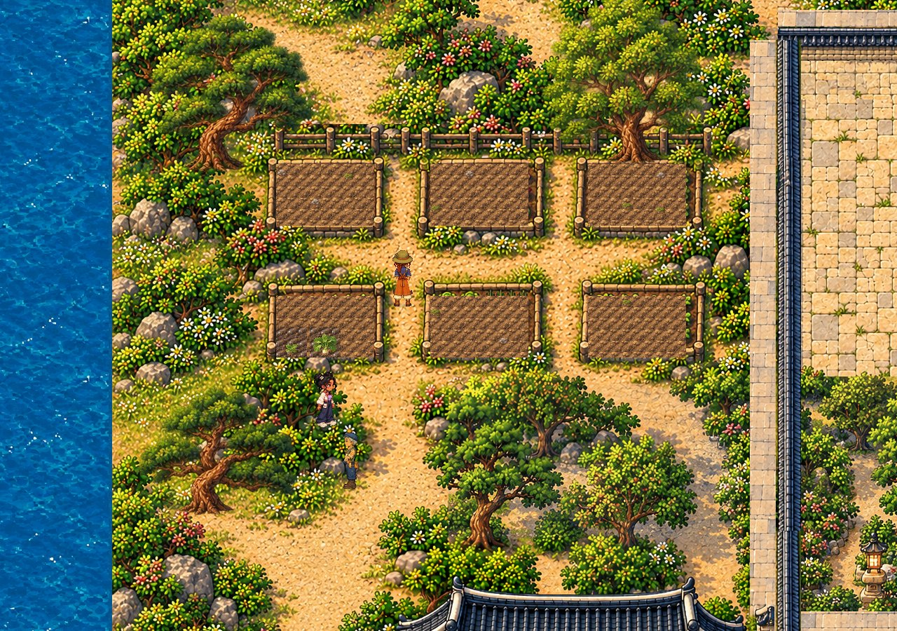
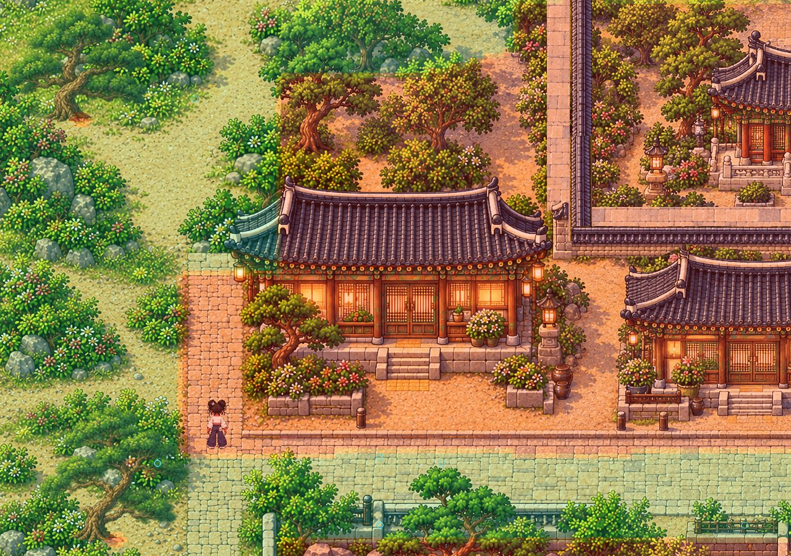
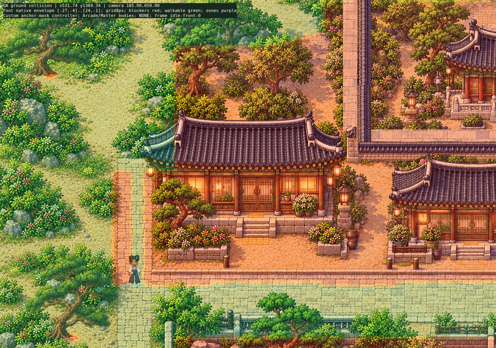
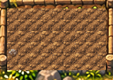
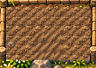
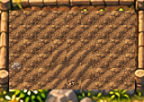
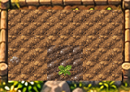
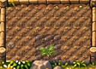
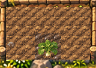
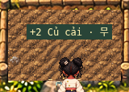
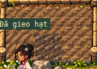
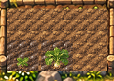

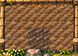
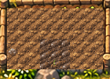
PNG native là bằng chứng pixel; videoH264 chỉ để xem chuyển động. Android/iPhone/GPU vật lý: NOT TESTED. Forge native QC giữ nguyên FAIL tiny seed/sprout và WARN safe margin; không gọi technicalPASS là phê duyệt art.